변리사-1차(3교시) (2018-03-17 기출문제)
1. 그림과 같이 밀도가 균일하며 한 변의 길이가 8cm 인 정사각형 철판이 xy평면에 놓여 있다. 이 철판 면적의 1/4인 A 부분을 잘라냈을 때, 남아 있는 B 부분의 질량 중심의 좌표는? (단, 철판의 두께는 무시한다.)
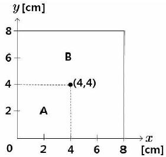
- (4,4)
- (13/3, 13/3)
- (9/2, 9/2)
- (14/3,14/3)
- (5, 5)
(정답률: 알수없음)

2. 그림과 같이 진공인 3차원 공간상의 네 지점에 각각 +5Q, -Q, -Q, -3Q의 전하가 놓여 있다.
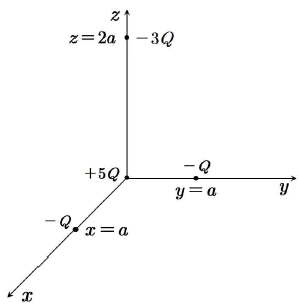
중심이 원점에 있고 한 변의 길이가 3a인 정육면체 가우스(Gauss) 면을 통과하는 알짜 전기 선속(electric flux)은? (단, 진공의 유전율은 ϵ0이다.)
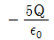
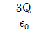
- 0
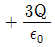
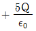
(정답률: 알수없음)
3. 그림과 같이 입자 A와 B가 균일한 자기장 안에서 반지름이 각각 R, 2R인 원운동을 하고 있다. A와 B의 전하량, 질량, 회전 주기는 모두 같다.
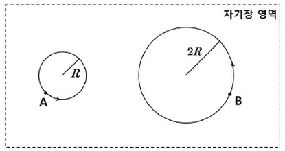
A와 B의 드브로이 물질파 파장을 각각λA와 λB라고 할 때, λA/λB는?
- 1/4
- 1/2
- 1
- 2
- 4
(정답률: 알수없음)
4. 반감기가 1.41 × 1010년인
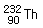
이 x번의 알파 붕괴와 y번의 베타-마이너스(β-) 붕괴를 거치는 자연 방사성 붕괴를 통해 안정한 최종 생성물인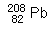
이 되었다. 이 때, x+y의 값은?- 6
- 8
- 10
- 12
- 14
(정답률: 알수없음)
5. 그림은 물의 상(phase) 도표를 나타낸 것이다. 점 P는 물의 삼중점이다.
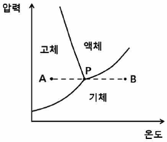
등압 가열 과정을 통해 상태 A에 있던 얼음이 P를 지나 상태 B가 될 때, 공급되는 열량 Q에 따른 물의 온도 T그래프로 가장 적절한 것은?
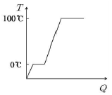
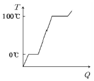
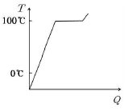
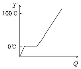
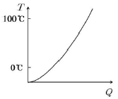
(정답률: 알수없음)
6. 그림은 밀도가 ρ로 균일한 유체 속에서 질량 m, 부피 V인 물체 1과 질량 4m, 부피 3V인 물체 2가 실로 연결된 채 정지해 있는 모습을 나타낸 것이다.
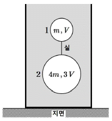
실에 걸리는 장력은? (단, 중력 가속도는 g이고, 실의 질량은 무시한다.)
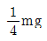
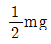
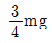
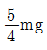
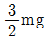
(정답률: 알수없음)
7. 그림은 공기 중에 있는 한쪽이 닫힌 관에 형성되는 정상파의 한 예를 나타낸 것이다. 관의 길이는 L이다.
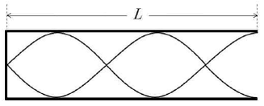
이 관에 형성되는 정상파의 진동수를 갖는 두 음파가 중첩되어 맥놀이 현상이 나타날 때, 맥놀이 진동수의 최솟값은? (단, 공기 중에서 음파의 속력은 v 이다.)
- v/4L
- v/2L
- 3v/4L
- 5v/4L
- 7v/4L
(정답률: 알수없음)
8. 그림과 같이 xy 평면상에서, v0의 속력으로 +x방향으로 운동하던 질량 m, 전하량 q인 입자가 길이 ℓ, 판 사이 간격 d인 평행판 축전기를 지난다. 입자는(0, 0)인 지점으로 들어와 (ℓ, d)인 지점을 통과하여 나간다.
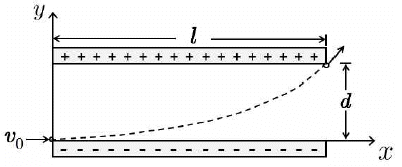
축전기 내부의 전기장 세기는? (단, 축전기 내부는 진공이고, 축전기 내에서 전기장은 균일하며, 입자의 크기와 전자기파 발생은 무시한다.)
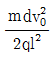
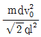
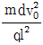
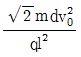
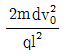
(정답률: 알수없음)
9. +x 방향으로 10.0 m/s로 등속도 운동을 하던 자동차가 원점을 지나는 순간(t=0)부터 3초 동안 그림과 같은 가속도로 운동한다. 가속도 방향은 +x방향이다.
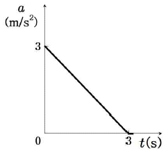
t=3초일 때 원점으로부터 자동차의 위치는?
- 14.5m
- 25.5m
- 31.7m
- 39.0m
- 53.5m
(정답률: 알수없음)
10. 공진(공명) 진동수가 f0인 RLC 직렬 회로에서, 진동수가 2f0 일 때의 임피던스는 진동수가 f0일 때의 임피던스의 2배이다. 진동수가 2f0일 때, 저항에 대한 유도 리액턴스의 비 XL/R은?
- 3/4
- 4/3
- 3/2
- 3/√2
- 4/√3
(정답률: 알수없음)
11. 그림은 이원자 분자 A2의 전자 이온화 질량스펙트럼 중 어미 피크(parent peak)부분을 나타낸 것이다. 이 때, M은 질량수가 작은 동위원소 A의 원자량이다.
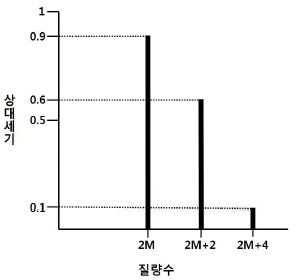
이 질량스펙트럼에 관한 설명으로 옳지 않은 것은?
- A의 동위원소는 2가지이다.
- A의 동위원소 중 자연계 존재량이 많은 것은 질량수가 작은 동위원소이다.
- A의 평균 원자량은
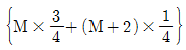
이다. - A의 동위원소 간 질량수 차는 2이다.
- (2M+2)에 해당하는 피크는 질량수가 같은 A의 동위원소에서 발생한 것이다.
(정답률: 알수없음)
12. 다음은 질소(N)와 산소(O)로 이루어진 세 가지 화학종이다.
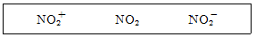
이에 관한 설명으로 옳은 것만을 ＜보기＞에서 있는 대로 고른 것은? (단, N와 O의 원자 번호는 각각 7과 8이다.)
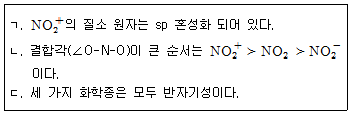
- ㄱ
- ㄷ
- ㄱ, ㄴ
- ㄴ, ㄷ
- ㄱ, ㄴ, ㄷ
(정답률: 알수없음)
13. 그림은 AB 분자의 분자 오비탈 에너지 준위의 일부를 나타낸 것이며, A와 B의 원자가 전자(valence electron) 수의 합은 11이다.
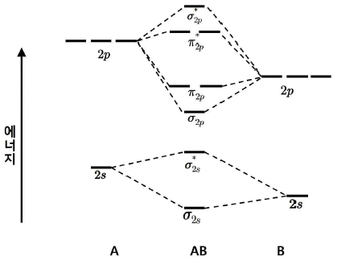
이에 관한 설명으로 옳은 것만을 ＜보기＞에서 있는 대로 고른 것은?
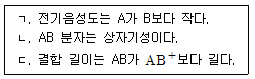
- ㄱ
- ㄷ
- ㄱ, ㄴ
- ㄴ, ㄷ
- ㄱ, ㄴ, ㄷ
(정답률: 알수없음)
14. 다음은 에탄올(C2H5OH)이 분해되는 반응의 반쪽 반응식이다.
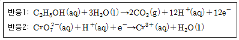
혈장 시료 50.0g에 함유된 (C2H5OH)을 적정하는 데, 0.⑤0M K2Cr2O740.0mL 가 소모되었다. 혈장 시료 속의 (C2H5OH) 무게 %는? (단, 이 적정에서 반응 1과 2만 고려하며, 반응 2는 균형이 이루어지지 않았다. 반응 온도는 일정하고, 에탄올의 분자량은 46.0g/mol 이다.)
- 0.023
- 0.046
- 0.069
- 0.092
- 0.13
(정답률: 알수없음)
15. 결정장 이론에 근거한 착이온들에 관한 설명으로 옳은 것만을 ＜보기＞에서있는 대로 고른 것은? (단, Cr, Co, Ni 의 원자 번호는 각각 24, 27, 28이다.)
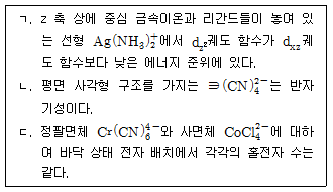
- ㄱ
- ㄴ
- ㄱ, ㄷ
- ㄴ, ㄷ
- ㄱ, ㄴ, ㄷ
(정답률: 알수없음)
16. 수용액 (가)는 0.10 몰 CaF2(s)를 순수한 물에 녹인 용액 1.0 L로, Ca2+의 평형 농도는 xM 이다. 수용액 (나)는 0.10몰 CaF2(s)를 [H+]=5.0×10-3M 인 산성 완충 용액에 녹인 용액 1.0 L로, Ca2+(aq)의 평형 농도는 yM이다.
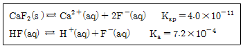
이에 관한 설명으로 옳은 것만을 ＜보기＞에서 있는 대로 고른 것은? (단, 온도는 T로 일정하고 수용액 (가)에서 F- 가 염기로 작용하는 것은 무시하며, 주어진 평형 반응만 고려한다.)
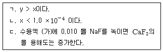
- ㄱ
- ㄴ
- ㄱ, ㄷ
- ㄴ, ㄷ
- ㄱ, ㄴ, ㄷ
(정답률: 알수없음)
17. 온도 T에서 산 HA의 농도가 1 × 10-4M 인 수용액 1000mL가 있다. 온도 T일 때, 평형 상태의 수용액에서 [A-]/[HA]=1/4 이 되기 위해 제거(증발)시켜야 할 물의 부피(mL)는? (단, HA는 비휘발성이며, 온도 T에서 HA의 해리 상수는 Ka=5/4×10-5이다.)
- 200
- 300
- 400
- 500
- 600
(정답률: 알수없음)
18. 그림은 1몰의 He(g)이 열이 잘 전달되는 금속판으로 분리된 실린더 A와 B에 각각 들어 있는 것을 나타낸 것이고, A와 B에서 기체의 압력(P0)과 절대 온도 (T0)는 같다. 실린더 B에 열량 q를 서서히 가하여 평형에 도달하였을 때, 실린더 B의 기체 압력은
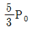
가 되었다.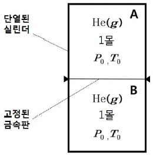
q/RT0는? (단, 고정된 금속판의 두께, 열용량은 무시하고 휘어짐은 없다. 기체는 이상 기체로 거동하고 기체의 몰 정적열용량(CV)은
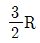
이며, R는 기체 상수이다.)- 1
- 4/3
- 3/2
- 2
- 5/2
(정답률: 알수없음)
19. 그림은 A(g )가 B(g )를 생성하는 반응에서 반응 시간에 따른 1/[A]의 변화를 절대 온도 T와
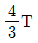
에서 나타낸 것이다. 이 반응의 활성화 에너지(kJ/mol)는? (단, R는 기체 상수이고, RT=2.5kJ/mol, ln 2=0.7 이다.)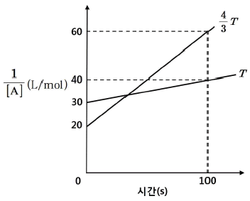
- 7
- 10
- 12
- 14
- 21
(정답률: 알수없음)
20. 다음은 A(g)가 B(g)를 생성하는 반응식과 농도로 정의되는 평형 상수(K)이다.
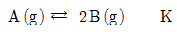
표는 피스톤이 있는 실린더에 기체 A와 B가 들어 있는 초기 상태와 평형 상태 1과 2에 대한 자료이다.
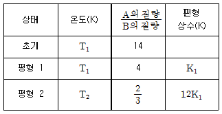
T2/T1는? (단, 대기압은 일정하고 피스톤의 질량과 마찰은 무시하며, 모든 기체는 이상 기체로 거동한다.)
- 9/8
- 6/5
- 5/4
- 4/3
- 3/2
(정답률: 알수없음)
21. 완두콩에서 종자의 모양은 대립유전자 R(둥근 모양)와 r(주름진 모양)에 의해, 종자의 색은 대립유전자 Y(노란색)와 y(녹색)에 의해 결정된다. R는 r에 대해, Y는 y에 대해 각각 완전 우성이다. 유전자형이 RrYy와 rryy인 종자를 교배하였을 때, F1에서 표현형이 둥글고 노란색인 종자와 주름지고 녹색인 종자가 나타나는 비율은?
- 1 : 1
- 1 : 2
- 1 : 3
- 2 : 1
- 3 : 1
(정답률: 알수없음)
22. 정상인과 비교하여 치료받지 않은 제1형 당뇨병(인슐린 의존성 당뇨병)을 가진 환자에서 나타나는 현상으로 옳지 않은 것은?
- 간에서 케톤체(ketone body) 생성이 증가한다.
- 혈액의 pH가 증가한다.
- 물의 배설이 증가한다.
- 지방 분해가 증가한다.
- Na+의 배설이 증가한다.
(정답률: 알수없음)
23. 식물의 광합성 특징에 관한 설명으로 옳은 것만을 ＜보기＞에서 있는 대로 고른 것은?
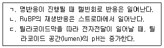
- ㄱ
- ㄴ
- ㄷ
- ㄱ, ㄴ
- ㄴ, ㄷ
(정답률: 알수없음)
24. 유전적 부동의 원인이 되는 현상으로 옳은 것만을 ＜보기＞에서 있는 대로 고른 것은?
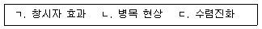
- ㄱ
- ㄷ
- ㄱ, ㄴ
- ㄴ, ㄷ
- ㄱ, ㄴ, ㄷ
(정답률: 알수없음)
25. 그림은 지방이 소화되는 과정의 일부(A∼D)를 나타낸 것이다. 이에 관한 설명으로 옳지 않은 것은?
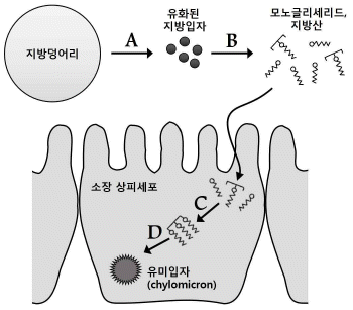
- A에서 담즙이 작용한다.
- A와 B는 위(stomach)에서 일어난다.
- C에서 모노글리세리드와 지방산은 다시 트리글리세리드로 합성된다.
- D 이후 형성된 유미입자(chylomicron)는 단백질을 포함한다.
- 유미입자는 소장 상피세포를 빠져나와 유미관(암죽관)으로 들어간다.
(정답률: 알수없음)
26. 진핵세포의 세포골격에 관한 설명으로 옳은 것만을 ＜보기＞에서 있는 대로 고른 것은?
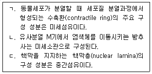
- ㄴ
- ㄷ
- ㄱ, ㄴ
- ㄱ, ㄷ
- ㄱ, ㄴ, ㄷ
(정답률: 알수없음)
27. 그림 (가)는 사람의 체세포에 있는 14번과 21번 염색체를, (나)는 (가)에서 돌연변이가 일어난 염색체를 나타낸 것이다.
(나)의 돌연변이가 일어난 염색체에 관한 설명으로 옳은 것은?
- 14번 염색체에서 중복이 일어났다.
- 21번 염색체에서 중복이 일어났다.
- 14번과 21번의 비상동염색체 사이에 전좌가 일어났다.
- 14번 염색체 안에서 일부분이 서로 위치가 교환되었다.
- 21번 각 상동염색체에 있는 대립유전자가 서로 분리되지 않았다.
(정답률: 알수없음)
28. 그림은 진핵세포 DNA의 복제원점(replication origin) ㉠으로부터 복제되고 있는 DNA의 일부를 나타낸 것이다. A와 B는 주형가닥이며 (가)는 복제원점의 왼쪽 DNA, (나)는 오른쪽 DNA이다.
이에 관한 설명으로 옳은 것만을 ＜보기＞에서 있는 대로 고른 것은?
- ㄱ
- ㄴ
- ㄱ, ㄷ
- ㄴ, ㄷ
- ㄱ, ㄴ, ㄷ
(정답률: 알수없음)
29. 사람의 인슐린 유전자를 플라스미드에 클로닝하여 재조합 DNA를 얻은 후, 이 재조합 DNA를 이용하여 박테리아에서 인슐린을 생산하려고 한다. 이 재조합 DNA에 포함된 DNA 서열로 옳은 것만을 ＜보기＞에서 있는 대로 고른 것은?
- ㄱ
- ㄴ
- ㄷ
- ㄱ, ㄷ
- ㄴ, ㄷ
(정답률: 알수없음)
30. 표는 세 종류의 생물 A∼C를 특성의 유무에 따라 구분한 것이다. A∼C는 효모, 대장균, 메탄생성균을 순서 없이 나타낸 것이다.
A, B, C로 옳은 것은? (순서대로 A, B, C)
- 대장균, 메탄생성균, 효모
- 대장균, 효모, 메탄생성균
- 효모, 대장균, 메탄생성균
- 메탄생성균, 대장균, 효모
- 메탄생성균, 효모, 대장균
(정답률: 알수없음)
31. 그림은 서로 다른 세 관측소 A, B, C에서 동일한 지진에 의해 기록된 지진파의 모습을 각각 나타낸 것이다.
이에 관한 설명으로 옳은 것만을 ＜보기＞에서 있는 대로 고른 것은?
- ㄱ
- ㄴ
- ㄷ
- ㄱ, ㄴ
- ㄴ, ㄷ
(정답률: 알수없음)
32. 그림 A, B, C는 현무암질, 유문암질, 안산암질 마그마의 화학조성을 순서없이 나타낸 것이다.
이에 관한 설명으로 옳은 것만을 ＜보기＞에서 있는 대로 고른 것은?
- ㄱ
- ㄴ
- ㄷ
- ㄱ, ㄴ
- ㄴ, ㄷ
(정답률: 알수없음)
33. 그림은 주요 판과 판의 경계부를 나타낸 것이다.
이에 관한 설명으로 옳지 않은 것은?
- A는 발산경계로서 열곡이 발달한다.
- B는 수렴경계로서 습곡산맥이 발달한다.
- C는 판 내부 환경으로 열점에 의한 화산활동이 활발하다.
- D는 보존경계로 심발지진이 많이 발생한다.
- E는 발산경계로 화산활동이 활발하다.
(정답률: 알수없음)
34. 그림은 우리나라 어느 지역의 동일 지층에서 발견된 화석이다.
이에 관한 설명으로 옳은 것만을 ＜보기＞에서 있는 대로 고른 것은?
- ㄱ
- ㄴ
- ㄷ
- ㄱ, ㄴ
- ㄴ, ㄷ
(정답률: 알수없음)
35. 바람에 영향을 미치는 힘에 관한 설명으로 옳은 것만을 ＜보기＞에서 있는 대로 고른 것은?
- ㄱ
- ㄷ
- ㄱ, ㄴ
- ㄴ, ㄷ
- ㄱ, ㄴ, ㄷ
(정답률: 알수없음)
36. 태양에 관한 설명으로 옳지 않은 것은?
- 태양의 핵에서 핵융합 반응이 일어난다.
- 흑점수의 극대 또는 극소 주기는 평균 23년이다.
- 흑점의 이동을 통해 태양의 자전 주기를 알 수 있다.
- 태양의 자전 방향은 지구의 자전 방향과 같다.
- 태양의 자전 속도는 고위도보다 적도에서 빠르다.
(정답률: 알수없음)
37. 태풍에 관한 설명으로 옳은 것만을 ＜보기＞에서 있는 대로 고른 것은?
- ㄱ
- ㄷ
- ㄱ, ㄴ
- ㄴ, ㄷ
- ㄱ, ㄴ, ㄷ
(정답률: 알수없음)
38. 지구형 행성이 목성형 행성보다 큰 값을 갖는 물리량은?
- 질량
- 밀도
- 반지름
- 위성의 수
- 공전 주기
(정답률: 알수없음)
39. 다음은 별 A와 별 B의 겉보기등급과 절대등급을 나타낸 것이다.
지구로부터 A, B까지의 거리를 각각 rA, rB 라 할 때, 이에 관한 설명으로 옳은 것만을 ＜보기＞에서 있는 대로 고른 것은?
- ㄱ
- ㄴ
- ㄱ, ㄷ
- ㄴ, ㄷ
- ㄱ, ㄴ, ㄷ
(정답률: 알수없음)
40. 그림은 외부 은하들의 거리와 시선속도를 나타낸 것이다.
이에 관한 설명으로 옳지 않은 것은?
- 우주는 팽창하고 있다.
- 허블 법칙에 해당한다.
- 은하들의 시선속도가 거리에 비례하여 증가한다.
- 허블 상수는 40 kms-1Mpc-1이다.
- 멀리 있는 은하일수록 적색편이가 크게 나타난다.
(정답률: 알수없음)